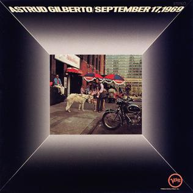

The Who blow up the Smothers Brothers Comedy Hour
The Who closed My Generation on The Smothers Brothers Comedy Hour by trashing their gear, and Keith Moon's bass drum, secretly packed with several times its normal explosive charge, detonated in a fireball that engulfed the stage, as HISTORY recounts.
The blast threw Moon backward with cymbal shrapnel in his arm, singed Pete Townshend's hair, and briefly knocked the CBS broadcast off the air, a moment Townshend later blamed for the start of his lifelong hearing damage during My Generation.
Drake University paper prints the first Paul is Dead story
Student editor Tim Harper's article Is Beatle Paul McCartney Dead? ran in Drake University's Times-Delphic, cataloging clues fans claimed were hidden across recent Beatles albums, including the backward message some heard in Revolution 9, as Wikipedia details.
Picked up by other college papers and Detroit radio within weeks, it became the first printed account of the biggest hoax in rock history, all built around a member of the Beatles who was very much alive.
Astrud Gilberto tracks her album at Century Sound Studios
Bossa nova singer Astrud Gilberto recorded her seventh studio album at Century Sound Studios in New York with producer Brooks Arthur, later naming the record simply after that day, September 17, 1969, per Discogs.
The album leaned on late-1960s pop covers like Chicago's Beginnings, folding her airy Brazilian phrasing into the string-heavy jazz and easy listening sound then dominating adult pop radio.

Diana Ross and the Supremes track Love Child
Diana Ross and the Supremes began recording Love Child at Hitsville U.S.A., a socially conscious single about growing up out of wedlock written and produced by Motown's newly formed songwriting team The Clan, as Wikipedia details.
Only Ross sang on the finished record, and the single became the group's eleventh number one, knocking the Beatles' Hey Jude off the top of the US Motown, soul and R&B charts weeks later.
The Who blow up the Smothers Brothers Comedy Hour
The Who closed My Generation on The Smothers Brothers Comedy Hour by trashing their gear, and Keith Moon's bass drum, secretly packed with several times its normal explosive charge, detonated in a fireball that engulfed the stage, as HISTORY recounts.
The blast threw Moon backward with cymbal shrapnel in his arm, singed Pete Townshend's hair, and briefly knocked the CBS broadcast off the air, a moment Townshend later blamed for the start of his lifelong hearing damage during My Generation.
The Doors get banned from The Ed Sullivan Show
The Doors performed People Are Strange and Light My Fire live on The Ed Sullivan Show, and Jim Morrison ignored the producers' demand to swap the word higher for better and sang the original lyric straight into the camera, as Wikipedia recounts.
A furious Ed Sullivan scrapped the band's contract for six future appearances on the spot, and Morrison later shrugged it off, saying they had already done the Sullivan show, a defining moment for psychedelic rock on network television.
Johnny Rivers' Poor Side of Town debuts on the Hot 100
Johnny Rivers' self-written ballad Poor Side of Town made its first appearance on the Billboard Hot 100, a lush, orchestrated turn away from the live go-go covers that had made his name, as Wikipedia notes.
Written with producer Lou Adler for the album Changes, the song climbed to number one by November, Rivers' only chart-topper of the decade and a highlight of the pop and Brill Building era.
The Vince Guaraldi Trio tracks A Charlie Brown Christmas
The Vince Guaraldi Trio began sessions at Fantasy Studios in San Francisco for the CBS special A Charlie Brown Christmas, cutting early takes of Christmas Is Coming and Skating alongside the instrumental Christmas Time Is Here, as Wikipedia notes.
The resulting soundtrack has since sold five times platinum, permanently welding cool jazz and easy listening piano trio arrangements to a holiday television tradition.
The Beatles collect a record $150,000 payday in Kansas City
The Beatles played Municipal Stadium after Kansas City Athletics owner Charles O. Finley personally guaranteed $150,000, more than any act had ever been paid for a single show, opening the set fittingly with Kansas City / Hey-Hey-Hey-Hey, as The Beatles Bible records.
Attendance fell well short of the stadium's capacity due to local resentment toward Finley, and the promoter behind the Beatles' payday is believed to have lost tens of thousands of dollars on the gamble.
Be My Baby tops the WABC survey over two soon-to-be classics
The Ronettes' Be My Baby took the number one spot on the WABC Musicradio survey, edging out The Angels' My Boyfriend's Back at number two and Bobby Vinton's Blue Velvet at number three.
Phil Spector's Wall of Sound production on Be My Baby went on to influence a generation of pop and Brill Building songwriters, with Brian Wilson famously calling it the greatest record ever made, per Wikipedia.
Arthur Alexander releases Anna (Go to Him)
Dot Records released Arthur Alexander's Anna (Go to Him), a country-soul ballad he wrote and sang with a vulnerable, aching delivery that reached the R&B top ten, per 45cat.
The song's biggest legacy came a year later when the Beatles covered it for Please Please Me, with John Lennon modeling his lead vocal directly on Alexander's original.
Sam Phillips opens his new Madison Avenue studio
Sun Records founder Sam Phillips opened the Sam C. Phillips Recording Service at 639 Madison Avenue in Memphis, a custom-built facility that replaced the cramped original Sun Studio at 706 Union Avenue, as Sam Phillips Recording details.
Phillips financed the expansion partly on the strength of Charlie Rich's 1960 Phillips International hit Lonely Weekends, and the new studio became the label's recording home for the rest of the decade.
Frequently Asked Questions
What happened in 1960s music on September 17?
September 17 produced eleven verified music events across the decade, headlined by the Who's explosive Smothers Brothers Comedy Hour taping in 1967.
The same night the Doors got themselves banned from The Ed Sullivan Show, and the date also carries the Beatles' record $150,000 Kansas City payday and the first printed Paul is Dead story.
Why did the Who get banned from television after the Smothers Brothers show?
The Who were not banned, but the September 17, 1967 taping became infamous after Keith Moon overloaded his bass drum with explosives for the closing smash-up.
The blast injured Moon with cymbal shrapnel, singed Pete Townshend's hair, and Townshend later pointed to it as the start of his hearing damage.
Why did Ed Sullivan ban the Doors?
Ed Sullivan's producers asked Jim Morrison to change the lyric higher to better in Light My Fire before their September 17, 1967 broadcast.
Morrison sang the original word live on air, and an angry Sullivan cancelled the band's planned six future appearances.
How much did the Beatles get paid for their Kansas City concert?
Kansas City Athletics owner Charles O. Finley guaranteed the Beatles $150,000 out of his own pocket for the September 17, 1964 Municipal Stadium show, a record sum for a single concert at the time.
Attendance still fell short of capacity because of local anger at Finley, and he is believed to have lost money on the deal.
Who started the Paul is Dead rumor?
Drake University student Tim Harper published the first printed account, Is Beatle Paul McCartney Dead?, in the Times-Delphic on September 17, 1969.
The article cataloged supposed clues in Beatles albums and artwork, and the story spread to other campus papers and radio stations within weeks.
What songs did Vince Guaraldi record for A Charlie Brown Christmas?
The Vince Guaraldi Trio began tracking Christmas Is Coming, Skating, and the instrumental Christmas Time Is Here at Fantasy Studios on September 17, 1965.
Those sessions built the soundtrack for the CBS special A Charlie Brown Christmas, which has since sold five times platinum.